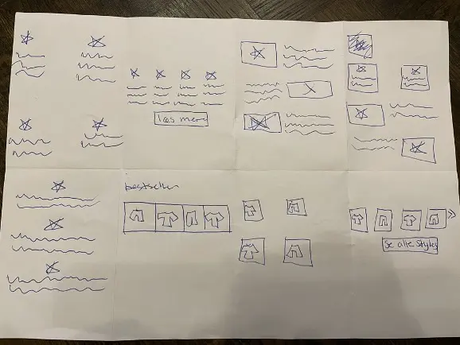

TEMA 3
Grundlæggende UX
Tema 3 havde fokus på UX og hvordan man som UX’er arbejder systematisk med kundecases. Temaet har bestået af flere små delopgaver som endte ud i en endelig XD prototype af en fiktiv webshop og den skulle til sidst pitches foran enkelte studerende og en underviser.
Opgave 03.02.02
03.02.02 Løsning var én stor opgave som bestod af flere små delopgaver vi løbende havde afleveret. Målet med opgaven var at vi skulle få en forståelse af de faser man gå igennem når man arbejder med kundecases som UX’er. Opgaven skulle give os viden inden for følgende 3 faser:
Koncept & research
Dette er fasen hvor vi skulle find ud af hvad vores produkt egentlig er og hvem målgruppen er. Derfra skulle jeg lave desk- og fieldresearch så jeg kunne teste mine hpoteser omkring forbrug af tøj hos forbrugerne. Ved brug af forskellige indsamlingsmetoder fik jeg til sidst samlet alt mit kvalitative og kvantiative data som jeg skulle bruge i næste fase.

Sketching/idé
Fasen bygger på at være meget hurtig og at jeg blot skal kaste alle mine ideer ned på papir og tegne dem. Derefter fik jeg testet nogle af ideerne via en fernisering vi afholdte i klassen. Jeg fik en klar ide om hvilke af mine funktioner der fik positiv respons og hvad der ikke gjorde. Denne respons skulle åbne op for starten på næste fase.
Prototype og test
Fasen byggede videre på den viden jeg havde fået fra researchen samt feedback fra mine sketches. Nu skulle prototypen designes inde i Adobe XD ved hjælp af moodboard, styletile og mock-up. En fejl jeg gjorde i denne fase var at jeg gik for hurtigt i gang med at starte på prototypen og arbejde med at gøre den flot. Her er det vigtigt at man også laver forarbejdet og gør sig tanker om farver, fonte og generel stil. Denne læring har jeg taget mig med i fremtidige opgaver så jeg kan lære atarbejde mere i processer.